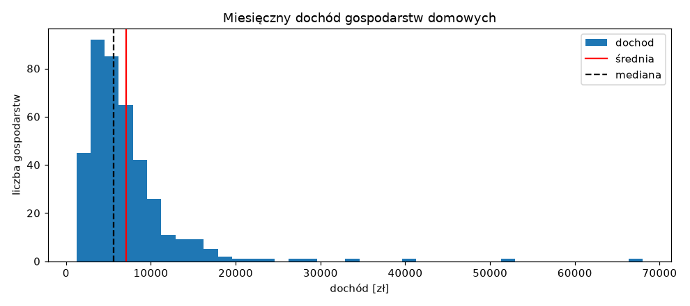
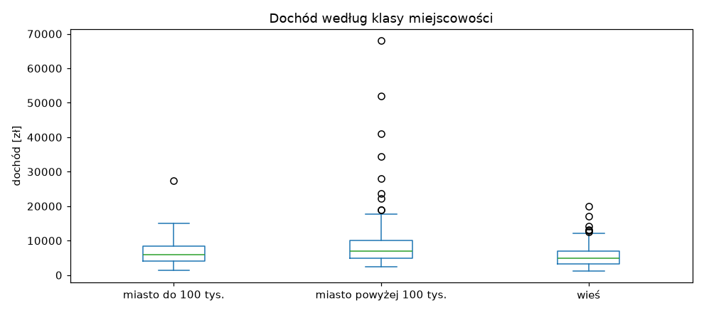
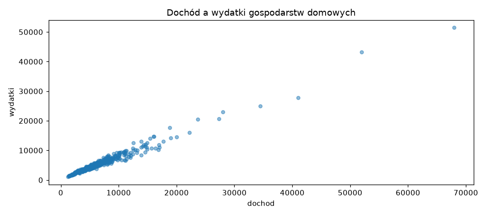
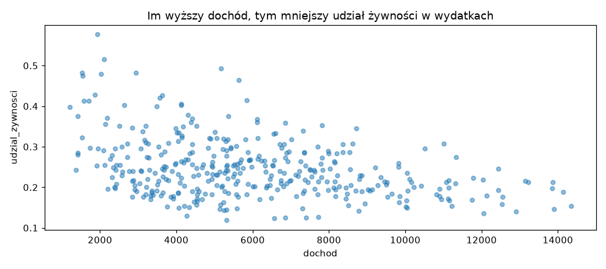
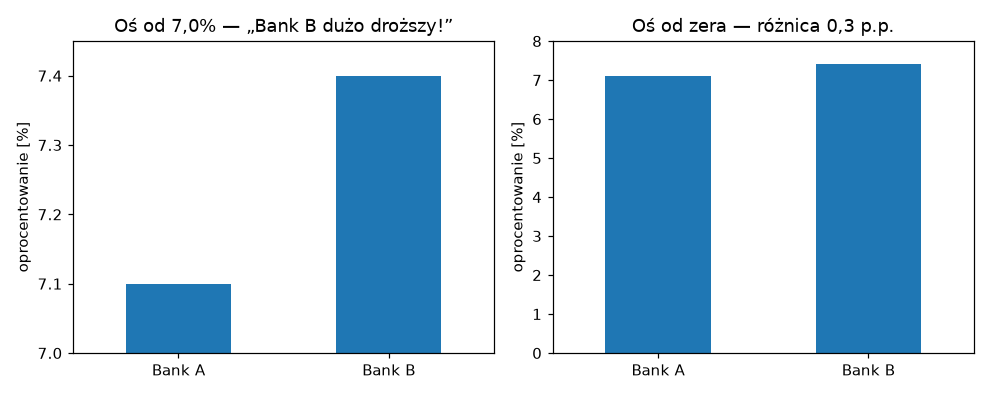

Zajęcia 2#
Statystyka opisowa bez wzorów — co naprawdę mówią liczby#
Co miesiąc w wiadomościach pada kwota „przeciętnego wynagrodzenia w Polsce" i co miesiąc spora część słuchaczy myśli: chyba nie u mnie. I ma rację — bo przeciętne w tym zdaniu znaczy średnie, a średnia w przypadku zarobków zachowuje się w bardzo specyficzny sposób.
Dziś uczymy się czytać liczby, które opisują dane: średnią, medianę, rozproszenie, wartości odstające i korelację. Bez wyprowadzania wzorów — za to z pytaniem, które zadaje sobie każdy dobry analityk: co ta liczba mówi, a co ukrywa? Najpierw w Excelu, potem — jak na poprzednich zajęciach — to samo w Pythonie.
Po dzisiejszych zajęciach będziesz w stanie:
- wyjaśnić, kiedy średnia kłamie i dlaczego GUS publikuje także medianę,
- opisać rozproszenie danych kwartylami i odchyleniem standardowym — i wiedzieć, dlaczego w finansach to po prostu ryzyko,
- znaleźć wartości odstające i zdecydować, co z nimi zrobić,
- policzyć korelację, odczytać ją z wykresu punktowego i nie wyciągnąć z niej wniosku, którego ona nie dowodzi,
- dobrać wykres do pytania i rozpoznać wykres, który manipuluje.
Przykłady z zajęć w Colabie
Część z Pythonem jest też w gotowym notatniku — z kodem do uruchomienia. Otwórz go i uruchamiaj komórki po kolei, czytając materiał. Żeby zachować swoje zmiany, zapisz kopię: Plik → Zapisz kopię na Dysku.

Plan na dziś#
| Blok | Czas |
|---|---|
| Po co statystyka opisowa | 10 min |
| Excel: średnia kontra mediana | 15 min |
| Excel: rozproszenie — kwartyle i odchylenie standardowe | 20 min |
| Excel: wartości odstające | 10 min |
| Excel: korelacja i wykres punktowy | 15 min |
| Przerwa | 10 min |
| To samo w Pythonie | 30 min |
| Wykresy, które coś pokazują | 10 min |
| Zadanie 2 | 60 min |
Po co statystyka opisowa#
Na zajęciach 1 mieliśmy 576 transakcji. Nikt nie przeczyta 576 wierszy — dlatego zamieniliśmy je na kilka liczb: przychód, zysk, marżę. To właśnie jest statystyka opisowa: streszczenie dużej tabeli w kilku liczbach, które da się zrozumieć i porównać.
Każde streszczenie coś gubi. Sztuka polega na tym, żeby wiedzieć co. Dziś zadamy sobie trzy pytania o każdy zbiór danych:
- Jaka wartość jest typowa? — średnia, mediana.
- Jak bardzo wartości się od siebie różnią? — rozstęp, kwartyle, odchylenie standardowe.
- Czy dwie rzeczy idą w parze? — korelacja.
Dane, na których pracujemy#
Pracujemy na budżetach 400 gospodarstw domowych — dane wzorowane na badaniu budżetów domowych, które co roku prowadzi GUS. Każdy wiersz to jedno gospodarstwo i jego miesięczne finanse.
- gospodarstwa_2026.xlsx — do Excela
- gospodarstwa_2026.csv — do Pythona
| Kolumna | Co oznacza |
|---|---|
id |
identyfikator gospodarstwa |
klasa_miejscowosci |
wieś, miasto do 100 tys., miasto powyżej 100 tys. |
liczba_osob |
ile osób tworzy gospodarstwo (1–6) |
dochod |
miesięczny dochód rozporządzalny całego gospodarstwa (zł) |
wydatki |
miesięczne wydatki całego gospodarstwa (zł) |
wydatki_zywnosc |
z tego: wydatki na żywność (zł) |
W Excelu dane zajmują arkusz dane, wiersze 2–401, kolumny A–F. Jest też
drugi, malutki arkusz fundusze — przyda się przy rozproszeniu.
Część 1: Excel#
Średnia kontra mediana#
W wolnych komórkach z boku (np. od I2 w dół) policz:
Dwie miary „typowego" dochodu, a różnica między nimi to prawie 1 500 zł. Która jest prawdziwa? Obie — tylko odpowiadają na różne pytania:
- Średnia — gdyby cały dochód wszystkich gospodarstw zebrać i podzielić po równo, każde dostałoby 7 066 zł.
- Mediana — wartość środkowa. Gdy ustawisz gospodarstwa od najbiedniejszego do najbogatszego, mediana jest dokładnie pośrodku: połowa ma mniej, połowa więcej. Typowe gospodarstwo ma ok. 5 600 zł.
Skąd różnica? Posortuj dane po dochodzie malejąco. Na górze jest kilka gospodarstw z dochodem 28–68 tys. zł miesięcznie. Pięć gospodarstw na czterysta — a ciągną średnią w górę dla wszystkich.
Eksperyment — zrób to teraz
Znajdź gospodarstwo z dochodem 68 000 zł i dopisz mu jedno zero (680 000 zł — typowa literówka przy wpisywaniu danych). Patrz na swoje dwie formuły:
| przed | po literówce | |
|---|---|---|
| średnia | 7 066 zł | 8 596 zł |
| mediana | 5 625 zł | 5 625 zł |
Jedna błędna komórka z czterystu podniosła średnią o ponad 1 500 zł.
Mediana nawet nie drgnęła. Cofnij zmianę (Ctrl + Z).
To jest najważniejsza lekcja dnia:
Średnia jest wrażliwa na wartości skrajne. Mediana nie.
Dlatego przy zarobkach, cenach mieszkań, majątku czy wartości zamówień — wszędzie tam, gdzie kilka bardzo dużych wartości może zawyżyć wynik — zawsze patrz na medianę obok średniej. GUS publikuje obie właśnie z tego powodu. Gdy średnia jest wyraźnie większa od mediany, wiesz od razu, że w danych jest garstka bardzo dużych wartości.
Kiedy średnia jest w porządku? Gdy wartości są rozłożone mniej więcej symetrycznie i nie ma skrajności — np. wzrost dorosłych osób, czas dojazdu do pracy, ocena produktu w skali 1–5. Wtedy średnia i mediana wychodzą prawie takie same.
A średnia jest potrzebna do sum
Mediana ma jedną wadę: nie da się z niej policzyć sumy. Jeśli chcesz wiedzieć, ile łącznie wydadzą wszystkie gospodarstwa w Polsce (np. żeby oszacować rynek), potrzebujesz średniej × liczby gospodarstw. Do pytania „ile ma typowy człowiek" — mediana. Do pytania „ile jest razem" — średnia.
Rozproszenie — jak bardzo dane się różnią#
Średnia i mediana mówią, gdzie jest środek. Ale nie mówią, czy wszyscy są blisko środka, czy rozrzuceni po całej skali.
Przejdź do arkusza fundusze. Masz tam miesięczne stopy zwrotu (w %) dwóch
funduszy inwestycyjnych przez rok. Policz dla obu kolumn średnią:
Identyczne. Czyli fundusze są tak samo dobre? Spójrz na same liczby: fundusz A co miesiąc zarabia między 0,3% a 0,7%. Fundusz B raz zarabia 4,2%, raz traci 3%. Jeśli w marcu musisz wypłacić pieniądze, w funduszu A wiesz, czego się spodziewać. W funduszu B — rzucasz monetą.
Tę różnicę mierzy odchylenie standardowe:
Odchylenie standardowe to — w uproszczeniu — typowa odległość wartości od średniej. Fundusz A odchyla się od swojej średniej typowo o 0,11 punktu procentowego, fundusz B — o 2,6. W finansach odchylenie standardowe stóp zwrotu nazywa się po prostu zmiennością albo ryzykiem. Ta sama średnia, zupełnie inne ryzyko.
Próbka czy populacja?
Excel ma dwie funkcje: ODCH.STANDARD.PRÓBKI (STDEV.S) i
ODCH.STANDARD.POPUL (STDEV.P). Różnią się minimalnie. Używaj próbki —
tak samo liczy pandas, więc wyniki z Excela i Pythona będą identyczne.
Rozproszenie dochodów#
Wracamy do arkusza dane. Pełny zestaw miar rozproszenia dla dochodu:
=MIN(D2:D401) 1 210 zł
=KWARTYL(D2:D401;1) 4 032,50 zł pierwszy kwartyl (Q1)
=MEDIANA(D2:D401) 5 625 zł drugi kwartyl = mediana
=KWARTYL(D2:D401;3) 8 222,50 zł trzeci kwartyl (Q3)
=MAX(D2:D401) 68 000 zł
=ODCH.STANDARD.PRÓBKI(D2:D401) 5 925,91 zł
Jak czytać kwartyle — dzielą gospodarstwa na cztery równe części:
| Przedział | Co znaczy |
|---|---|
| poniżej Q1 (4 033 zł) | 25% najbiedniejszych gospodarstw |
| między Q1 a Q3 (4 033 – 8 223 zł) | środkowe 50% — „typowe" gospodarstwa |
| powyżej Q3 (8 223 zł) | 25% najzamożniejszych |
Różnica Q3 − Q1 to rozstęp międzykwartylowy (IQR): tu 4 190 zł. Mówi,
jak szeroki jest „środek" — i podobnie jak mediana, nie przejmuje się
skrajnościami.
Za to rozstęp (MAX − MIN = 66 790 zł) i odchylenie standardowe
(5 926 zł) są — tak jak średnia — mocno zawyżone przez kilka bogatych gospodarstw.
Zasada się powtarza: przy danych ze skrajnościami mediana i kwartyle mówią
więcej niż średnia i odchylenie.
Odchylenie w relacji do średniej
Czy odchylenie 5 926 zł to dużo? Zależy od skali. Dla dochodów rzędu 7 tys.
— ogromnie dużo. Dla cen mieszkań rzędu 700 tys. — prawie nic. Dlatego
często dzieli się odchylenie przez średnią i dostaje współczynnik
zmienności: tu 5 926 / 7 066 ≈ 0,84, czyli 84%. Pozwala porównywać
rozproszenie rzeczy mierzonych w zupełnie różnych skalach.
KWARTYL w nowszych Excelach
Excel podpowie Ci też KWARTYL.PRZEDZ.ZAMK (QUARTILE.INC) — daje
dokładnie to samo co KWARTYL. Po angielsku: QUARTILE(D2:D401,1).
Wartości odstające#
Skąd wiedzieć, które wartości są „skrajne"? Najpopularniejsza reguła używa kwartyli: za odstające uznajemy wartości oddalone od pudełka Q1–Q3 o więcej niż półtora IQR.
górna granica = Q3 + 1,5 × IQR = 8 222,50 + 1,5 × 4 190 = 14 507,50 zł
dolna granica = Q1 − 1,5 × IQR = 4 032,50 − 6 285 = −2 252,50 zł
Dolna granica jest ujemna, więc z dołu nic nie odstaje — dochód nie bywa
ujemny. A ile gospodarstw jest powyżej górnej granicy? Jeśli granicę masz
policzoną w komórce, np. I10:
">"&I10 skleja znak „większe niż" z wartością z komórki — to ten sam & co
przy kwartałach na zajęciach 1.
26 gospodarstw odstaje. Co z nimi zrobić? To pytanie o dane, a nie o statystykę:
| Sytuacja | Co robimy |
|---|---|
| wartość niemożliwa (dochód 680 000 przy wydatkach 5 000, wiek 230 lat) | to błąd — poprawiamy albo usuwamy |
| wartość rzadka, ale prawdziwa (zamożne gospodarstwo) | zostawiamy — to część rzeczywistości |
| chcemy opisać „typowego" klienta | raportujemy medianę zamiast średniej albo pokazujemy wynik z odstającymi i bez nich |
Nasze 26 gospodarstw jest prawdziwych — nie ma powodu ich usuwać. Ale gdy ktoś zapyta „ile zarabia typowe gospodarstwo", odpowiadamy medianą.
Nie usuwaj niewygodnych danych
Wyrzucenie wartości odstających tylko dlatego, że „psują" wynik, to najprostszy sposób na sfałszowanie analizy. Jeśli coś usuwasz — napisz co, ile i dlaczego.
Korelacja i wykres punktowy#
Ostatnie pytanie: czy dwie rzeczy idą w parze? Gospodarstwa, które więcej zarabiają, więcej wydają — to brzmi oczywiście, ale jak bardzo?
Zaznacz kolumny dochod i wydatki (D1:E401), potem Wstawianie → Wykres
punktowy (XY). Każda kropka to jedno gospodarstwo. Kropki układają się wzdłuż
ukośnej linii — im dalej w prawo, tym wyżej.
Tę zależność streszcza jedna liczba — współczynnik korelacji:
Korelacja przyjmuje wartości od −1 do 1:
| Wartość | Znaczenie | Wykres punktowy |
|---|---|---|
| bliska 1 | gdy jedno rośnie, drugie też rośnie | kropki wzdłuż linii w górę |
| ok. 0,5 | umiarkowany związek | chmura wyraźnie pochylona |
| bliska 0 | brak liniowego związku | bezładna chmura |
| bliska −1 | gdy jedno rośnie, drugie maleje | kropki wzdłuż linii w dół |
Dodaj kolumnę G: udzial_zywnosci = =F2/E2 (jaką część wydatków stanowi
żywność) i skopiuj w dół. Teraz:
=WSP.KORELACJI(C2:C401;F2:F401) 0,83 liczba osób a wydatki na żywność
=WSP.KORELACJI(D2:D401;G2:G401) −0,43 dochód a udział żywności
Pierwsza jest oczywista: więcej osób, więcej jedzenia. Druga jest ciekawsza — im wyższy dochód, tym mniejszą część budżetu pochłania jedzenie. Bogatsze gospodarstwa wydają na żywność więcej złotówek, ale mniejszy procent. To prawo Engla, jedno z najstarszych odkryć ekonomii (1857) — i właśnie znalazłeś je w danych sam.
Korelacja to nie przyczynowość
Sprzedaż lodów i liczba utonięć są silnie skorelowane. Lody nikogo nie topią — po prostu jedno i drugie rośnie latem. Korelacja mówi, że dwie rzeczy idą w parze. Nie mówi, która powoduje którą ani czy w ogóle któraś powoduje drugą. Tu akurat mechanizm jest jasny (dochód pozwala wydawać), ale to wiemy z ekonomii, nie z liczby 0,99.
Korelacja widzi tylko linię prostą
Współczynnik korelacji mierzy zależność liniową. Jeśli zależność jest silna, ale zakrzywiona (np. w kształcie litery U), korelacja może wyjść bliska zera. Dlatego zawsze patrz też na wykres punktowy — sama liczba może Cię oszukać.
Przerwa — 10 minut#
Część 2: to samo w Pythonie#
Jak na poprzednich zajęciach: te same pytania, te same odpowiedzi, tylko zapisane jako kod — a do tego kilka rzeczy, które w Pythonie są dużo prostsze niż w Excelu.
Wczytanie i describe() — teraz już rozumiesz wszystko#
import pandas as pd
import matplotlib.pyplot as plt
URL = "https://kubzal.github.io/wsb-merito/semestr_zimowy_2026_27/data_science/dane/gospodarstwa_2026.csv"
df = pd.read_csv(URL)
df.describe().round(2)
liczba_osob dochod wydatki wydatki_zywnosc
count 400.00 400.00 400.00 400.00
mean 2.68 7066.20 5804.80 1244.62
std 1.40 5925.91 4513.82 562.23
min 1.00 1210.00 1030.00 310.00
25% 1.00 4032.50 3450.00 787.50
50% 2.00 5625.00 4775.00 1175.00
75% 4.00 8222.50 6847.50 1600.00
max 6.00 68000.00 51470.00 4280.00
Na zajęciach 1 kazałem patrzeć tylko na mean, min i max. Teraz rozumiesz
każdy wiersz:
mean— średnia,50%— mediana. Dla dochodu 7 066 kontra 5 625: od razu widać, że są skrajnie wysokie wartości.std— odchylenie standardowe (to samo coODCH.STANDARD.PRÓBKI).25%i75%— pierwszy i trzeci kwartyl.
Jedna komenda daje wszystko, co w Excelu wymagało sześciu formuł na kolumnę.
Pojedyncze miary:
Fundusze — rozproszenie w trzech linijkach#
fundusze = pd.DataFrame({
"fundusz_A": [0.6, 0.4, 0.5, 0.7, 0.3, 0.5, 0.6, 0.4, 0.5, 0.6, 0.4, 0.5],
"fundusz_B": [3.1, -2.4, 1.8, -1.5, 4.2, -3.0, 2.5, -0.8, 1.2, -2.9, 3.6, 0.2],
})
fundusze.agg(["mean", "std", "min", "max"]).round(2)
agg liczy kilka statystyk naraz — znasz go z groupby na zajęciach 1.
Statystyki w grupach#
To, co w Excelu wymaga tabeli przestawnej (i w ogóle nie umie mediany), w pandas to jedna linijka:
mean median std count
klasa_miejscowosci
miasto do 100 tys. 6538.0 5955.0 3723.0 104
miasto powyżej 100 tys. 9287.0 6925.0 8611.0 136
wieś 5522.0 4990.0 3063.0 160
Zobacz duże miasta: średnia 9 287, mediana 6 925. Różnica 2 400 zł — dużo większa niż w pozostałych grupach. Wszystkie bardzo zamożne gospodarstwa mieszkają w dużych miastach i to one ciągną średnią. Gdyby porównywać tylko średnie, różnica między miastem a wsią wyglądałaby na dwa razy większą, niż jest naprawdę dla typowego gospodarstwa.
Histogram — kształt rozkładu#
W Excelu histogram to kilka kliknięć i walka z przedziałami. Tu:
df["dochod"].plot.hist(bins=40, figsize=(9, 4), title="Miesięczny dochód gospodarstw domowych")
plt.axvline(df["dochod"].mean(), color="red", label="średnia")
plt.axvline(df["dochod"].median(), color="black", linestyle="--", label="mediana")
plt.xlabel("dochód [zł]")
plt.ylabel("liczba gospodarstw")
plt.legend()

Histogram dzieli dochody na przedziały (bins=40 — czterdzieści słupków)
i pokazuje, ile gospodarstw wpada do każdego. Widać to, co dotąd było tylko
liczbami:
- większość gospodarstw jest stłoczona po lewej, między 2 a 10 tys. zł,
- w prawo ciągnie się długi ogon — pojedyncze gospodarstwa aż do 68 tys.,
- ogon odciąga średnią (czerwona) w prawo od mediany (przerywana).
Taki rozkład nazywa się prawoskośnym. Mają go prawie wszystkie dane o pieniądzach: dochody, majątek, ceny, wartość zamówień.
plt to biblioteka matplotlib, na której pandas rysuje wykresy. Przez nią
dorysowujemy linie (axvline — pionowa linia), podpisy osi i legendę.
Wykres pudełkowy — kwartyle w obrazku#
df.plot.box(column="dochod", by="klasa_miejscowosci", figsize=(9, 4))
plt.title("Dochód według klasy miejscowości")
plt.ylabel("dochód [zł]")

Wykres pudełkowy to kwartyle narysowane:
- pudełko — od Q1 do Q3, czyli środkowe 50% gospodarstw,
- kreska w pudełku — mediana,
- wąsy — sięgają do najdalszych wartości, które jeszcze nie są odstające (półtora IQR od pudełka),
- kółka — wartości odstające, każde to jedno gospodarstwo.
Od razu widać, że w dużych miastach pudełko jest najwyżej (typowo zarabia się więcej) i że tam są wszystkie najbardziej skrajne kółka.
Wartości odstające#
Granica z Excela, policzona w Pythonie:
q1 = df["dochod"].quantile(0.25)
q3 = df["dochod"].quantile(0.75)
granica = q3 + 1.5 * (q3 - q1)
odstajace = df[df["dochod"] > granica]
print(granica, len(odstajace))
Ile zmienia się wynik bez nich?
typowe = df[df["dochod"] <= granica]
print("wszystkie:", round(df["dochod"].mean()), df["dochod"].median())
print("bez odstających:", round(typowe["dochod"].mean()), typowe["dochod"].median())
Średnia spadła o prawie 1 100 zł, mediana o 200. Jeszcze raz ta sama lekcja: mediana jest odporna na skrajności, średnia nie.
Korelacja#
Dodajemy udział żywności i liczymy korelacje wszystkich par kolumn naraz:
liczba_osob dochod wydatki wydatki_zywnosc udzial_zywnosci
liczba_osob 1.00 0.41 0.41 0.83 0.20
dochod 0.41 1.00 0.99 0.81 -0.43
wydatki 0.41 0.99 1.00 0.81 -0.45
wydatki_zywnosc 0.83 0.81 0.81 1.00 -0.07
udzial_zywnosci 0.20 -0.43 -0.45 -0.07 1.00
To macierz korelacji — w każdej komórce korelacja kolumny z wiersza
z kolumną z nagłówka. Na przekątnej same jedynki (każda kolumna jest idealnie
skorelowana sama ze sobą), a tabela jest symetryczna. numeric_only=True pomija
kolumny tekstowe. W Excelu na tę tabelę potrzebowałbyś dziesięciu formuł
WSP.KORELACJI.
Wykres punktowy:
df.plot.scatter(x="dochod", y="wydatki", alpha=0.5, figsize=(9, 4),
title="Dochód a wydatki gospodarstw domowych")

alpha=0.5 robi kropki półprzezroczystymi — tam, gdzie się nakładają, robi się
ciemniej i widać, gdzie jest gęsto.
I prawo Engla — tym razem bez odstających gospodarstw, bo przez nie cała chmura ścisnęłaby się przy lewej krawędzi:
typowe = df[df["dochod"] <= granica]
typowe.plot.scatter(x="dochod", y="udzial_zywnosci", alpha=0.5, figsize=(9, 4),
title="Im wyższy dochód, tym mniejszy udział żywności w wydatkach")

Chmura opada w prawo, ale jest szeroka — stąd korelacja −0,43, a nie −0,9. Związek jest wyraźny, ale daleki od reguły: przy tym samym dochodzie jedne gospodarstwa wydają na jedzenie 15%, inne 35%.
Wykresy, które coś pokazują#
Na zajęciach 1 była zasada: zanim narysujesz wykres, odpowiedz, jakie zdanie ma z niego wynikać. Dziś ją uzupełniamy — typ wykresu wynika z typu pytania:
| Pytanie | Wykres | Przykład z dziś |
|---|---|---|
| jak rozkładają się wartości? | histogram | dochody gospodarstw |
| czym różnią się grupy? | pudełkowy albo słupkowy | dochód: wieś kontra miasta |
| czy dwie rzeczy idą w parze? | punktowy | dochód a wydatki |
| jak coś zmienia się w czasie? | liniowy | przychód Południa z zajęć 1 |
| jaki jest udział części w całości? | słupkowy (koło — tylko przy 2–3 częściach) | struktura wydatków |
Jak kłamać wykresem#
Dwa banki, oprocentowanie kredytu: 7,1% i 7,4%. Ten sam fakt, dwa wykresy:

Po lewej Bank B wygląda na trzy razy droższy — bo oś pionowa zaczyna się od 7%, a nie od zera. Po prawej widać prawdę: różnica jest niewielka. Lewy wykres nie zawiera żadnej fałszywej liczby, a mimo to wprowadza w błąd.
Na co uważać — u siebie i u innych
- Wykres słupkowy zawsze od zera. Długość słupka to wartość — ucięta oś przekłamuje proporcje. (Wykres liniowy może zaczynać się wyżej, bo tam patrzymy na zmianę, a nie na długość.)
- Bez 3D. Trójwymiarowe słupki i koła zniekształcają proporcje i niczego nie dodają.
- Odsetki, gdy grupy są różnej wielkości. 160 gospodarstw wiejskich i 104 małomiasteczkowe — porównuj medianę albo procent, nie sumę.
- Podpisane osie z jednostką. „dochód [zł]" zamiast „dochod".
- Tytuł, który mówi wniosek. „Im wyższy dochód, tym mniejszy udział żywności" zamiast „Wykres 3".
Ściągawka#
| Chcę… | Excel | Python (pandas) |
|---|---|---|
| średnia | =ŚREDNIA(D2:D401) |
df["dochod"].mean() |
| mediana | =MEDIANA(D2:D401) |
df["dochod"].median() |
| średnia z warunkiem | =ŚREDNIA.JEŻELI(B2:B401;"wieś";D2:D401) |
df[df["klasa_miejscowosci"] == "wieś"]["dochod"].mean() |
| mediana z warunkiem | =MEDIANA(JEŻELI(B2:B401="wieś";D2:D401)) |
df[df["klasa_miejscowosci"] == "wieś"]["dochod"].median() |
| kwartyl | =KWARTYL(D2:D401;1) |
df["dochod"].quantile(0.25) |
| odchylenie standardowe | =ODCH.STANDARD.PRÓBKI(D2:D401) |
df["dochod"].std() |
| min / max | =MIN(…), =MAX(…) |
.min(), .max() |
| wszystko naraz | — | df.describe() |
| kilka miar w grupach | tabela przestawna (bez mediany) | df.groupby("g")["k"].agg(["mean", "median", "std", "count"]) |
| ile powyżej progu | =LICZ.JEŻELI(D2:D401;">"&I10) |
(df["dochod"] > granica).sum() |
| korelacja dwóch kolumn | =WSP.KORELACJI(D2:D401;E2:E401) |
df["dochod"].corr(df["wydatki"]) |
| korelacje wszystkich par | — | df.corr(numeric_only=True) |
| histogram | Wstawianie → Wykres statystyczny → Histogram | df["k"].plot.hist(bins=40) |
| wykres pudełkowy | Wstawianie → Wykres statystyczny → Pole i wąsy | df.plot.box(column="k", by="g") |
| wykres punktowy | Wstawianie → Punktowy (XY) | df.plot.scatter(x="a", y="b") |
| linia na wykresie | — | plt.axvline(wartosc, color="red", label="…") |
| podpisy | Elementy wykresu | plt.title(…), plt.xlabel(…), plt.ylabel(…) |
Nazwy angielskie
ŚREDNIA.JEŻELI = AVERAGEIF, KWARTYL = QUARTILE,
ODCH.STANDARD.PRÓBKI = STDEV.S, WSP.KORELACJI = CORREL,
JEŻELI = IF. Mediana z warunkiem działa od razu w Excelu 365; w starszych
wersjach zatwierdź formułę Ctrl + Shift + Enter.
Zadanie 2 — Ile naprawdę zarabia się w firmie? (12 pkt)#
Czas: ok. 60 minut (30 min Excel + 30 min Python)
Oddanie: plik .xlsx (część 1) oraz notatnik .ipynb (część 2) na Moodle
W firmie produkcyjnej MeritoTech trwają negocjacje płacowe. Prezes w komunikacie dla prasy pisze: „Średnie wynagrodzenie w naszej firmie przekracza 8 300 zł brutto". Związki zawodowe odpowiadają: „Typowy pracownik zarabia niecałe 6 800 zł". Obie strony powołują się na te same dane. Twoim zadaniem jest sprawdzić, kto ma rację — i co powinno trafić na stół negocjacyjny.
Dane obejmują 320 pracowników:
- wynagrodzenia_2026.xlsx — do części 1
- wynagrodzenia_2026.csv — do części 2
| Kolumna | Co oznacza |
|---|---|
pracownik_id |
identyfikator pracownika |
dzial |
Produkcja, Logistyka, Sprzedaż, IT, Administracja, Zarząd |
staz_lat |
staż pracy w firmie (lata) |
wynagrodzenie |
miesięczne wynagrodzenie brutto (zł) |
ocena_roczna |
ocena z ostatniej oceny okresowej (1 — najsłabsza, 5 — najlepsza) |
Rób części po kolei i pokaż mi wynik każdej z nich, gdy będzie gotowa.
Część 1 — Excel (ok. 30 min)#
Dane zajmują wiersze 2–321, kolumny A–E.
- Policz średnią i medianę wynagrodzenia w całej firmie oraz średnią
bez Zarządu (
ŚREDNIA.JEŻELIz warunkiem"<>Zarząd"). - Policz Q1, Q3, IQR i górną granicę wartości odstających. Policz, ilu pracowników jest powyżej granicy, i filtrem sprawdź, z których działów pochodzą.
- Zbuduj tabelę przestawną:
dzialw wierszach, a w wartościach wynagrodzenie trzy razy — jako średnia, odchylenie standardowe i liczba. Obok dopisz formułą współczynnik zmienności (odchylenie ÷ średnia). Pomijając Zarząd: w którym dziale płace są najbardziej zróżnicowane? - Wstaw wykres punktowy stażu i wynagrodzenia, policz korelację stażu z wynagrodzeniem oraz oceny rocznej z wynagrodzeniem. W pustej komórce napisz 2–3 zdania: kto ma rację — prezes czy związki — i dlaczego obie liczby są prawdziwe?
Część 2 — Python (ok. 30 min)#
Nowy notatnik w Colabie:
import pandas as pd
import matplotlib.pyplot as plt
URL = "https://kubzal.github.io/wsb-merito/semestr_zimowy_2026_27/data_science/dane/wynagrodzenia_2026.csv"
df = pd.read_csv(URL)
- Wyświetl
describe(). Policz średnią i medianę wynagrodzenia — dla całej firmy i bez Zarządu — i sprawdź, czy zgadzają się z Excelem. - Policz w podziale na działy: średnią, medianę, odchylenie standardowe
i liczbę pracowników (
groupby+agg). Dodaj kolumnęwsp_zmiennoscii posortuj tabelę malejąco po medianie. - Narysuj histogram wynagrodzeń z zaznaczoną średnią i medianą oraz wykres pudełkowy wynagrodzenia według działów — bez Zarządu. Każdy wykres z tytułem i podpisanymi osiami.
- Wyświetl macierz korelacji. Na koniec dodaj komórkę tekstową i napisz notatkę dla obu stron negocjacji (4–5 zdań): ile zarabia typowy pracownik i którą miarę należy podawać, który dział ma najbardziej zróżnicowane płace, czy staż i ocena roczna przekładają się na wynagrodzenie.
Wskazówki#
- Ściągawka Excel ↔ Python jest kilka sekcji wyżej — korzystaj z niej.
"<>Zarząd"w Excelu znaczy „różne od Zarząd". W pandas:df[df["dzial"] != "Zarząd"].- Odchylenie standardowe w tabeli przestawnej: kliknij pole w Wartościach → Ustawienia pola wartości → OdchStd (po angielsku StdDev; nie OdchStdc — to wersja „populacji"). Tak samo zmieniasz na Średnia i Licznik.
- Wykres punktowy w Excelu: zaznacz tylko dwie kolumny liczbowe (
C1:D321), bez kolumny z działem. - Kolumnę
wsp_zmiennoscidodajesz tak jakmarza_%na zajęciach 1 — najpierw wynikgroupbydo zmiennej, potem nowa kolumna. - Wykres pudełkowy bez Zarządu: najpierw przefiltruj, potem rysuj —
bez_zarzadu.plot.box(column="wynagrodzenie", by="dzial"). Z Zarządem pozostałe pudełka zleją się w kreski na dole wykresu. - Kilka wykresów w jednej komórce zleje się w jeden. Rysuj każdy w osobnej
komórce albo dopisz
plt.show()po każdym.
Na co patrzę przy ocenie
Jak na zajęciach 1: czy liczby się zgadzają i czy wniosek wynika z tego, co policzyłeś. Odpowiedź „prezes kłamie" albo „związki kłamią" jest zła — obie strony podają prawdziwe liczby. Dobra odpowiedź wyjaśnia, skąd bierze się różnica i która liczba lepiej opisuje typowego pracownika.
Punktacja (12 pkt)#
| Punkty | Za co |
|---|---|
| 12 pkt | obie części zrobione na zajęciach i pokazane prowadzącemu |
| 8 pkt | jedna z dwóch części zrobiona na zajęciach i pokazana prowadzącemu |
| 4 pkt | zadanie dokończone po zajęciach i wysłane na Moodle w terminie |
| 0 pkt | brak rozwiązania albo wysłane po terminie |
Termin przesłania na Moodle: 2026-11-28 (dzień przed kolejnymi zajęciami).
Serio, róbcie to na zajęciach
Ta sama godzina pracy jest warta 12 pkt tu i teraz albo 4 pkt w domu. Mamy tylko cztery zadania w całym semestrze, więc każde z nich to 12% oceny końcowej. Jestem na sali po to, żeby Wam pomagać — korzystajcie z tego, zamiast walczyć z tym samym problemem wieczorem w domu.